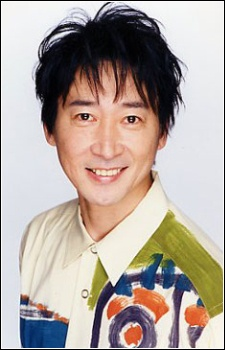
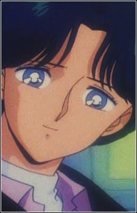

Keiichi Nanba is a Japanese voice actor. He is affiliated with Aoni Production. He voiced Joa in Toriko and Zoisite in Sailor Moon.
- Gender: Male
- Birthday: August 26, 1957
- Hometown: Yamaguchi, Japan
- Wife: Mayami Sho

| |
Keiichi Nanba is a Japanese voice actor. He is affiliated with Aoni Production. He voiced Joa in Toriko and Zoisite in Sailor Moon.
|
 |
|---|
|  | Alan |
|
Alan is Minako Aino's crush. He worked with Minako at one point with her friend Katarina |
 |
Gurio Umino |
|
Gurio Umino is Usagi Tsukino's neighbor. He is smart and sterotypical nerd. He has a crush on Usagi and Naru. |